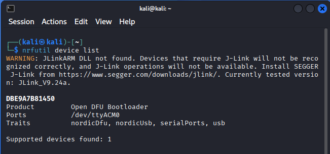

Lab: Remote ID
Objectives
The Big Picture (Read This First)
Module 13 claimed Remote ID is a plaintext, unauthenticated "digital license plate." This lab proves it by reading one out of the air.
You'll use an nRF52840 dongle (a cheap Nordic radio chip) flashed as a Bluetooth Low Energy sniffer, feed its capture into Wireshark, and use the OpenDroneID dissector so Wireshark decodes the drone's broadcast into readable fields — right down to the Operator ID (DARKWOLF). No key, no pairing, no permission from the drone. If you can hear it, you can read it.
Two setup steps that trip people up:
-
Flashing the dongle — it ships in "DFU bootloader mode." You load the sniffer firmware with
nrfutilonce, then it shows up in Wireshark as a capture device. -
The dissector — Wireshark doesn't understand Remote ID until you drop in the
opendroneidplugin. Verify it under Help → About → Plugins before capturing.
Setup VirtualBox for NRF USB Passthrough
- In VirtualBox Manager, Select
-
Kali-linux -> Settings -> USB
-
Insert nRF 52840 dongle in USB port on host laptop
-
Select the [+] icon on the right hand of the USB panel
-
Select ZEPHYR nRF Sniffer in the list
-
Select [OK] on the bottom of the USB panel

Lab Setup Wireshark for OpenDroneID
mkdir \-p \~/.local/lib/wireshark/plugins/
cd \~/.local/lib/wireshark/plugins/
git clone [https://github.com/opendroneid/wireshark-dissector](https://github.com/opendroneid/wireshark-dissector)
Verify OpenDroneID
-
Start wireshark
-
Select Help -> About Wireshark > Plugins
-
Verify the entry for opendroneid-dissector.lua is present in the plugin list
Setup Wireshark for NRF BLE Sniffer
-
Download nrfutil
-
Run the following commands
mkdir \-p \~/.local/lib/wireshark/extcap
./nrfutil install completion
./nrfutil install device
./nrfutil install ble-sniffer
./nrfutil ble-sniffer bootstrap
Verify Wireshark NRF BLE Sniffer Device
-
Start a BLE RemoteID device
-
Open Wireshark
-
On the Capture Splash page, select
-
NRF Sniffer for Bluetooth LE:/dev/ttyACMxxxx
-
In the filter, enter opendroneid
-
Verify you are receiving opendrone id packets
-
Stop the packet capture
Flash nRF52840
Initially, the nRF5280 is delivered in DFU bootloader mode.
- TBD. Manually set DFU bootloader mode (button stuff)
In VirtualBox, add the nRF 52840 in bootloader mode
- Settings > USB > [+] (add) -> Nordic Semiconductor Open DFU Bootloader

nrfutil device list showing the dongle in bootloader mode — note the serial number; you pass it to the program command below.
To flash, you will need nrfutil setup in Kali above. Open a terminal window and run the following commands
nrfutil device list*
# * Note the serial number
# * For this example: DBE9A7B81450
# Verify bootloader mode
nrfutil ble-sniffer bootstrap
# Note the path for the blesniffer firmware for nrf52840
# /home/kali/.nrfutil/share/nrfutil-ble-sniffer/firmware/sniffer\_nrf52840dongle\_nrf52840\_4.1.1.zip
nrfutil device program --firmware /home/kali/.nrfutil/share/nrfutil-ble-sniffer/firmware/sniffer_nrf52840dongle_nrf52840_4.1.1.zip --serial-number DBE9A7B81450
# * You should see a progress bar.
# * Wait for completion
Lab: Wireshark
-
Open terminal window and type in
wireshark -
Double click
nRF Sniffer for Bluetooth LE

-
In the filter, type opendroneid

-
In the filter, type opendroneid.message.operatorid
-
In the lower left window of wireshark, expand the packet fields to read the operator id
-
Displays the operator id for this drone is DARKWOLF

References
https://docs.nordicsemi.com/bundle/nrfutil/page/README.html
https://www.nordicsemi.com/Products/Development-tools/nRF-Util
Notes
“Regarding minimum RID requirements, it's "(Wi-Fi Beacon OR (BT5 AND BT4))". This is defined in the RID MOC to the Part 89 rule.”
https://github.com/opendroneid/transmitter-linux/issues/12#issuecomment-1474298494
Hcitool supported specs
sudo hcitool -i hci0 cmd 0x4 0x3
https://stackoverflow.com/questions/59237661/hcitool-lescan-fails-on-ubuntu
On BBB: 01 03 10 00 FF FE 2F FE DB FF 7B 87
Byte Bit
32 EV4 packets 4 0
33 EV5 packets 4 1
34 Reserved for future use 4 2
35 AFH capable Peripheral 4 3
36 AFH classification Peripheral 4 4
37 BR/EDR Not Supported 4 5
38 LE Supported (Controller) 4 6
39 3-slot Enhanced Data Rate ACL packets 4 7
DB \-\> 11011011